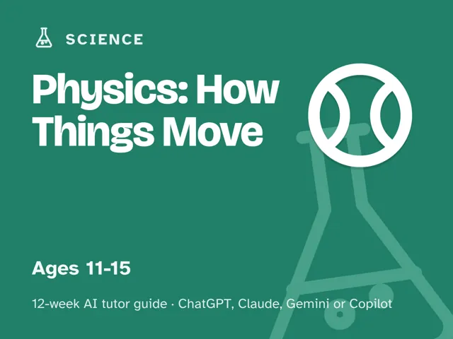

Physics: How Things Move
$29Instant download: a PDF to read, a browser copy, and the AI-tutor file you hand straight to any AI assistant.Buy it on Etsy →
Take the free placement check first: 15 minutes, and it names the week to start at.
Turn "why does that happen?" into real understanding. This is a done-for-you, 12-week plan for guiding an 11–15-year-old through the physics that's already happening around them every day (forces, motion, gravity, energy, simple machines, why things float or fly), using an AI tutor to do the explaining while you do the leading. By the end, your learner can explain and predict how the everyday world works, not recite formulas from a worksheet. You do not need a physics background.
What you get
- 12 deep weekly sessions, each with a plain-language concept explanation, a concrete worked example, a minute-by-minute session plan for the ~60 minutes with the AI-tutor prompts built in, a "show me" checkpoint so you know it landed, common mistakes to watch for, and practice to lock it in.
- A "Never used an AI chat assistant? Start here" onboarding that takes a complete beginner from zero to ready in about five minutes. A free AI assistant is all you need, no paid plan required.
- A parent/teacher orientation: how to sit beside a learner using AI, why the adult stays the leader and the AI is the tutor, and exactly what to expect each week: you lead one fully scripted ~60-minute session, with every step timed and written out for you. No physics background or prior AI experience needed.
- Four rescue prompts in the front matter for when the learner is stuck or frustrated, is bored, or is just repeating words back, and for when the AI starts explaining before the learner predicts.
- Works wherever you live. The guide is written in US English, and every launch prompt tells the AI to use your country or region for spelling, units, money, and examples.
- A digital guide (delivered as a downloadable file), not a printable workbook, built around worked examples, session plans, and checkpoints rather than logs or rubrics.
The 12 weeks
- What Is Physics, Really? (surfacing what your learner already thinks)
- Forces: Push and Pull
- Motion and Speed
- Gravity
- Simple Machines
- Energy and Its Forms
- Heat, Light, and Sound: Energy on the Move
- Electricity and Magnets: Safe Basics (battery-powered only)
- Why Things Float or Fly
- Project Week I: Plan a Physics Experiment
- Project Week II: Run the Experiment
- Demo Day: Show the Physics (present, reflect, choose what's next)
Who it's for
Parents, teachers, and homeschoolers guiding a learner aged roughly 11–15. No physics background needed, and no prior AI experience needed; each session is fully scripted, with every step written out for you and a five-minute beginner setup if you've never used an AI chat assistant before. You lead one ~60-minute session each week; the tutor does the explaining and questioning while you do the leading and the sitting-nearby.
Why this instead of a free chatbot
A raw chatbot will happily define "kinetic energy" and move on, which teaches vocabulary for a quiz, not an understanding of why a ramp helps, why a dropped ball speeds up, or why a boat floats. This pack ships the structure a chatbot lacks: a real 12-week arc built around everyday objects and predictions, Socratic prompts that make the tutor ask the learner to guess before it explains, guardrails that keep the tutor from just handing over answers, and checkpoints that prove the learner can explain and predict it themselves. Curriculum + guardrails + a way to see progress. That's the difference.
FAQ
- Do I need a physics background? No. The AI tutor explains and questions; you lead. Every session comes with the exact prompt to start it.
- Which AI does it use? What if I've never used one? Works with any modern AI assistant: ChatGPT, Claude, Copilot, or Gemini. A free version of any of them is enough; you don't need a paid plan. If you've never used an AI chat assistant before, the guide's first section walks you from zero to ready in about five minutes.
- Is my child's data collected? Not by us. This is a digital guide sold to you, the adult. There's no login and no child account; you start and supervise every AI session under your own account. AI providers may store chats, so the guide shows you what to keep out of them (a first name and age are all it needs).
- Is this hands-on, or all screen time? Both, in balance. Most weeks use ordinary household objects (a ball, a ramp, a magnet, a bowl of water), and any electricity activity is battery-powered only, never a wall outlet.
- What ages? Roughly 11–15.
- Refunds? Standard marketplace refund policy applies.
$29Instant download: a PDF to read, a browser copy, and the AI-tutor file you hand straight to any AI assistant.Buy it on Etsy →